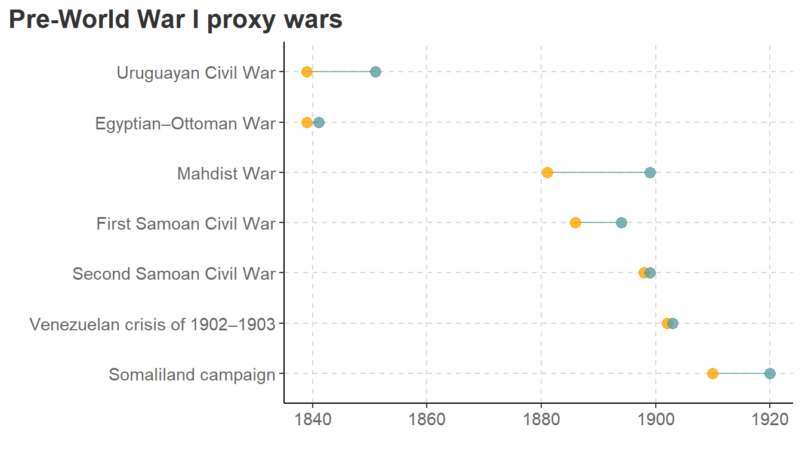
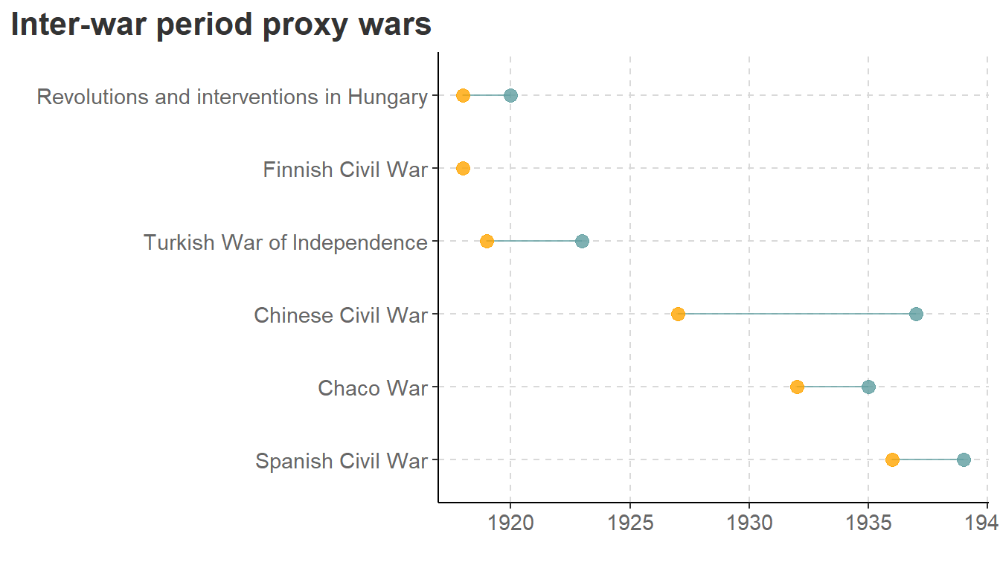
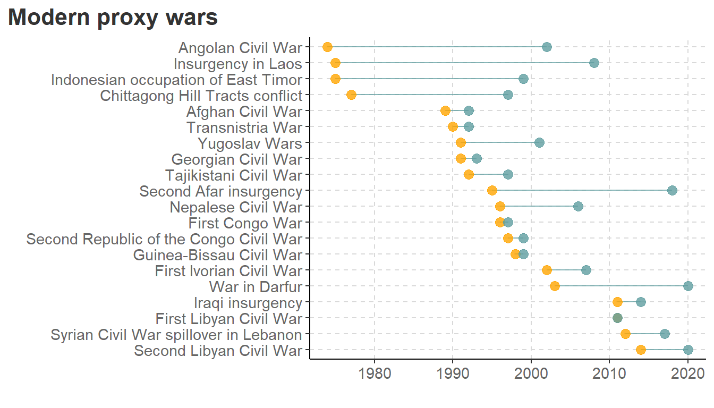
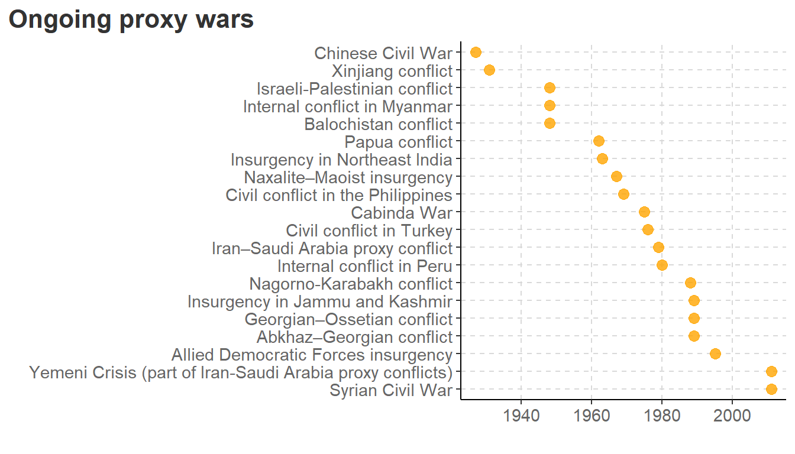
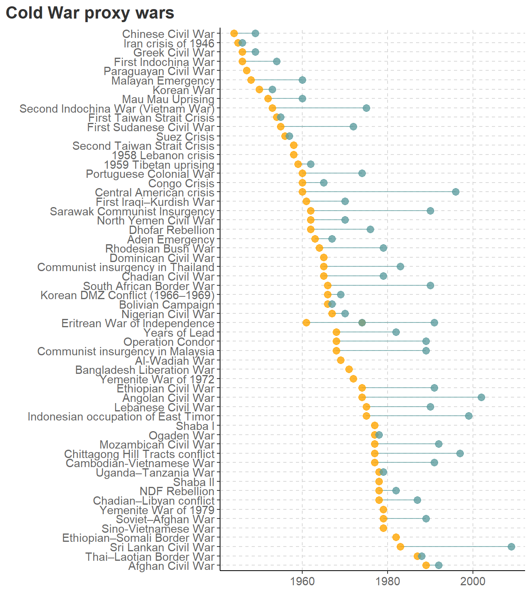

Proxy Wars - Wiki Scrape
scraping
R
combat
Scrape Wikipedia for proxy war data
Image source: Virginia Tech Publishing
Proxy wars
Violence, conflict, and proxy warfare – all on a blissful, dreamy Sunday afternoon. Actually, I was listening to an NPR discussion on an afternoon drive that referenced the work of the Proxy War Project out of Virginia Tech. As a data geek, the next obvious question is: Gee, where can I find data on that?
What does the general public think of regarding proxy warfare? Is it a rag tag group of thugs funded by a dark agency and left to run around the forest? Or maybe proxy wars are a relic of the cold war? To the contrary, according to War on the Rocks (a super cool site on all things war and conflict), “[e]vents of the last decade suggest the increasing salience of such conflicts.” The blog goes on to say that “[p]roxy wars are poised to be a…significant factor in the evolving strategic environment.”
So, as soon as I got home, I jumped online for a quick search for some data. The first thing I found was the Wikipedia page. It most certainly is not the most comprehensive data, but it has a nice feature: A helpful Wiki contributor created a typology of proxy wars. I decided to scrape it to started some initial exploration.
I’m not intending for this to be a deep dive into coding nor proxy war dynamics. This is just a quick and dirty scrape of Wikipedia data to get a sense of what’s going.
Scraping and Cleaning Wikipedia Data
Code
# libraries
library(rvest)
library(tidyverse)
library(kableExtra)
source("my_gg_theme.R")
# Scrape the tables from the page
proxy_tables <-
read_html('https://en.wikipedia.org/wiki/List_of_proxy_wars') %>%
html_table(fill = TRUE) %>%
# set names based on Wikipedia names
set_names(
c(
'Caveat',
'Series',
'Pre-World War I proxy wars',
'Inter-war period proxy wars',
'Cold War proxy wars',
'Modern proxy wars',
'Ongoing proxy wars'
)) The Wikipedia page displays the following caveat:
This article or section appears to be slanted towards recent events. Please try to keep recent events in historical perspective and add more content related to non-recent events. (October 2022)
Wikipedia spread the data across a number of tables. To prep the data for plotting, I put them into one big data frame and did some minor cleaning. In particular, the dates were a little jenky. The resulting data looks like:
Code
# data cleaning
proxy_data_df <-
# drop unneeded data
proxy_tables[-c(1,2)] %>%
map2_df(
names(proxy_tables[-c(1,2)]),
~mutate(.x, war_type = .y)) %>%
janitor::clean_names() %>%
separate(
dates,
into = c('start_year', 'end_year'),
sep = "–") %>%
mutate(across(
start_year:end_year,
~ str_extract(.x, '[0-9]{4}') %>%
as.numeric(.x))) %>%
mutate(across(
c(war, combatant_1, combatant_1, result),
~ str_remove(., "\\[.*\\]$")))
proxy_data_df %>%
slice_head(n = 5) %>%
knitr::kable() %>%
kable_styling(font_size = 7)| war | start_year | end_year | combatant_1 | combatant_2 | result | war_type |
|---|---|---|---|---|---|---|
| Egyptian–Ottoman War | 1839 | 1841 | Egypt-aligned powers: Egypt France Spain | Allied powers: British Empire Austrian Empire Russian Empire Kingdom of Prussia Ottoman Empire | Compromise | Pre-World War I proxy wars |
| Uruguayan Civil War | 1839 | 1851 | Colorados Unitarian Party Empire of Brazil Italian Legion France Great Britain | Blancos Argentine Confederation | Colorado victory | Pre-World War I proxy wars |
| Mahdist War | 1881 | 1899 | British Empire Canada Khedivate of Egypt Belgium Congo Free State Ethiopian Empire Italy Supported by: Emirate of Jabal Shammar | Mahdist Sudan Supported by: Ottoman Empire Russian Empire France | British-Egyptian-Italian victory | Pre-World War I proxy wars |
| First Samoan Civil War | 1886 | 1894 | Tamasese German Empire | Mata'afans Supported by: United States | Stalemate | Pre-World War I proxy wars |
| Second Samoan Civil War | 1898 | 1899 | Mata'afans German Empire | Samoa United Kingdom United States | Stalemate | Pre-World War I proxy wars |
Plotting war duration
To avoid rewriting a bunch of code, let’s create a little function to select the war-type of choice and plot the data. (Note, the plotting code was a little long and distracting, so I pushed some of it to a source script.)
Code
# a function to select war type and plot
war_plot <- function(df, type) {
df %>%
filter(
war_type == type
) %>%
ggplot(aes(
x = fct_reorder(war, -start_year),
y = start_year)) +
geom_segment(aes(
xend = war,
yend = end_year),
color = "cadetblue",
alpha = 0.75) +
# year start
geom_point(color = "orange", # #E69F00
size = 3,
alpha = 0.8) +
# year end
geom_point(aes(
y = end_year),
color = "cadetblue",
size = 3,
alpha = 0.8) +
coord_flip() +
labs(
x = "",
y = "",
title = type
) +
# a sourced function for some trivial formatting
quick_gg_theme()
}Code
war_plot(proxy_data_df, "Pre-World War I proxy wars")
war_plot(proxy_data_df, 'Inter-war period proxy wars')

Code
war_plot(proxy_data_df, 'Modern proxy wars')
war_plot(proxy_data_df, 'Ongoing proxy wars')

Code
war_plot(proxy_data_df, 'Cold War proxy wars')
Wrap up
First, that’s a lot o’ proxy wars. Of course, there’s clearly a few problems with the data. Some dates are missing. And I’m suspicious about the ongoing proxy wars. Are they all really still ongoing?
The Cold War was fertile ground for proxy wars. I guess it makes sense, right? Cold wars are characterized by indirect conflict, working through proxies, pawns, and agents of mayhem.
Given that proxy wars are frequently a means for “agents” to have deniability regarding the havoc they are wrecking, there is likely a large number of unreported/undiscovered agent-proxy relationships.
It might be interesting to parse the text-based columns and see which actors are most frequently leveraging proxies, and in what parts of the world…another day…